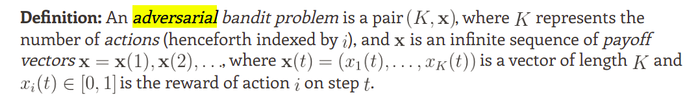

搬运一些国外讲bandit比较好的博客文章
Note: 与原文相比，数学符号定义会做一些小的修改，使其与RL设定通用
bandit类问题可以大致分为三类：
- stochastic：每台老虎机吐钱的概率固定，要找到得到reward最大的那台机器
- adversarial：想象你在和赌场老板玩bandit游戏，赌场老板会在每一轮中调整每台老虎机吐钱的概率，使得你的尽可能少拿钱
- Markovian：每台老虎机吐钱的概率模型是Markovian的
References
- The Adversarial Bandit is not a Statistics Problem
- Adversarial Bandits and the Exp3 Algorithm
- A blog of bandit algorithms
- Lecture 22: Adversarial Multi_Armed Bandits
Stochastic
Adversarial
1. Setting

Adversarial bandit可以看做是赌徒与赌场老板玩的一个游戏，与stochastic设定相同，玩家要多次尝试去拉老虎机，以此验证自己对每台老虎机吐钱概率的belief，最小化的目标为自己玩游戏的regret
赌场老板的目标是尽可能少让赌徒拿钱，目标有两种设定，一种是最大化赌徒的weak regret，即假设赌徒从头到尾只去尝试吐钱概率最大的老虎机，最终可以得到的reward与实际赌徒得到reward的差值：
与之相比，另一种设定是最大化赌徒的regret，即假设赌徒从头到尾只选取最优策略可以拿到的reward与实际赌徒拿到的reward差值
看起来weak regret和regret对于stochastic bandit问题是等价的，因为stochastic bandit中最优的老虎机不会发生变化，reward的概率值也不会发生变化，其optimal policy是greedy的
2. Exp3
Exp3的全称是 Exponential weight algorithm for exploration and exploitation
算法的核心思想是对于每个可选择的action维护一组weight，用这些weight来决定下一步中应当选择哪个action，若得到的reward是好的，就让相关的weight增长，反之则降低相关的weight，由此达到根据adversary动态调节policy的目的
算法还需要一个exploration参数 $\gamma \in [0,1]$， $\gamma$ 越大则Exp3算法会越倾向于用均匀分布来explore，反之则会更加依赖参数 $w$ 来决定探索策略
Given $\gamma \in [0,1]$, initialize the weights $w_i(1) = 1$ for $i = 1$, $\dots, K$;
In each round t:
- Set $\displaystyle p_i(t) = (1-\gamma)\frac{w_i(t)}{\sum_{j=1}^K w_j(t)} + \frac{\gamma}{K}$ for each $i$;
- Draw the next action $i_t$ randomly according to the distribution of $p_i(t)$;
- Observe reward $R_{i_t}(t)$;
- Define the estimated reward $\hat{R}_{i_t}(t)$ to be $\displaystyle \frac{R_{i_t}(t)}{p_{i_t}(t)}$;
- Set $\displaystyle w_{i_t}(t+1) = w_{i_t}(t) \exp(\frac{\gamma \hat{R}_{i_t}(t)}{K})$;
- Set all other $w_j(t+1) = w_j(t)$;
3. Theoretical analysis
首先分析Exp3的理论期望regret
Theorem 1: For any $K > 0$, $\gamma \in (0, 1]$, and any stopping time $T \in \mathbb{N}$
这个定理给出了Exp3的regret upper bound，我们可以看出
- 过大的 $\gamma$ 会导致这个upper bound第一项过大，失去其本来的意义，因为过大的 $\gamma$ 实际代表的是对exploration的倾向性
- 当action数量很多时，过小的 $\gamma$ 会导致第二项很大，过小的 $\gamma$ 代表的是对exploitation的倾向性
综上，从该upper bound的形式即可看出exploration与exploitation之间的矛盾，如何挑选 $\gamma$ 的值是一个重要的问题，因此这里引出第二个引理
Corollary 2: Assume that $G_{\textup{max}}(T)$ is bounded by $g$, and that Exp3 is run with
Then the weak regret of Exp3 is bounded by $2\sqrt{(e-1)gK\log K}$ for any reward.
这里注意当reward分配是服从Bernoulli distribution时，这个 $G_{max}(T)$ 的upper bound $g$ 绝大多数情况下都等于 $n$ ，即玩bandit游戏的步数，也就是说Exp3得到的regret关于步数是 $O(\sqrt{(n)})$ 的关系（可以看出adversarial bandit场景下的regret还是要比stochastic场景下 $O(\log(n))$ 级别大很多